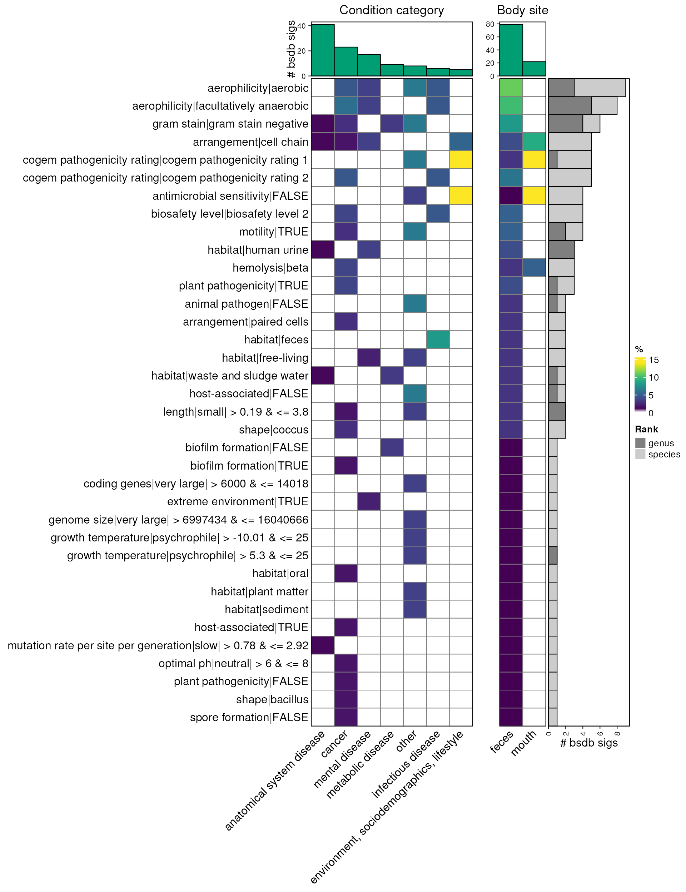

vignettes/articles/bsdb_signatures.Rmd
bsdb_signatures.Rmd
library(bugphyzzAnalyses)
library(bugphyzz)
library(bugsigdbr)
library(dplyr)
library(purrr)
library(tidyr)
library(ComplexHeatmap)
library(gridExtra)TypicalMicrobiomeSignatures:
url <- "https://zenodo.org/records/7622129/files/waldronlab/TypicalMicrobiomeSignaturesExports-v1.0.1.zip?download=1"
temp_dir <- tempdir()
temp_file <- file.path(temp_dir, "tms.zip")
download.file(url = url, destfile = temp_file)
unzip(temp_file, exdir = temp_dir, junkpaths = TRUE)
csv_files <- list.files(temp_dir, pattern = "csv", full.names = TRUE)
l <- map(csv_files, ~ {
.x |>
read.csv() |>
pivot_longer(
names_to = "Body site", values_to = "Prevalence",
cols = 3:last_col()
) |>
mutate(
`Body site` = sub("_(species|genus)_prevalence$", "", `Body site`)
)
})
names(l) <- sub("^.*matrix_(.*).csv$", "\\1", csv_files)
tms <- bind_rows(l, .id = "rank_agegroup") |>
separate(
col = "rank_agegroup", into = c("Rank", "Age group"),
sep = "_", remove = TRUE
) |>
relocate(
`Age group`, `Rank`, `NCBI ID` = NCBI, `Taxon name` = name,
`Body site`, Prevalence
) |>
filter(`Age group` == "adult") |>
mutate(
`Body site` = case_when(
`Body site` == "stool" ~ "feces",
`Body site` == "oralcavity" ~ "mouth",
TRUE ~ `Body site`
)
) |>
filter(Prevalence > 0.05)
head(tms)
#> # A tibble: 6 × 6
#> `Age group` Rank `NCBI ID` `Taxon name` `Body site` Prevalence
#> <chr> <chr> <int> <chr> <chr> <dbl>
#> 1 adult genus 1912216 Cutibacterium skin 0.965
#> 2 adult genus 1912216 Cutibacterium vagina 0.0632
#> 3 adult genus 1912216 Cutibacterium mouth 0.302
#> 4 adult genus 1279 Staphylococcus skin 0.965
#> 5 adult genus 1279 Staphylococcus vagina 0.0632
#> 6 adult genus 1716 Corynebacterium skin 0.835BugSigDB:
## "10.5281/zenodo.10407666" v1.2.0
## "10.5281/zenodo.6468009" v1.1.0
bsdb <- importBugSigDB(version = "10.5281/zenodo.10407666", cache = FALSE)
bsdb <- bsdb |>
filter(`Host species` == "Homo sapiens") |>
filter(!is.na(`Abundance in Group 1`)) |>
# filter(grepl("(healthy|control)", `Group 0 name`, ignore.case = TRUE)) |>
filter(!is.na(`Body site`)) |>
filter(`Study design` == "case-control" )
dim(bsdb)
#> [1] 1416 50BugSigDB subsets by body site:
uberon <- getOntology(onto = "uberon")
body_sites <- unique(tms$`Body site`)
bsdb_subsets_by_bodysite <- vector("list", length(body_sites))
names(bsdb_subsets_by_bodysite) <- body_sites
for (i in seq_along(bsdb_subsets_by_bodysite)) {
if (body_sites[i] == "skin") {
bsdb_subsets_by_bodysite[[i]] <- bsdb |>
filter(grepl(body_sites[i], `Body site`, ignore.case = TRUE))
} else {
bsdb_subsets_by_bodysite[[i]] <- subsetByOntology(
bsdb, column = "Body site", term = body_sites[i], ontology = uberon
)
}
}Bugphyzz:
bp <- importBugphyzz()TypicalMicrobiomeSignatures:
ranks <- c("genus", "species")
tms_sigs <- vector("list", length(body_sites) * length(ranks))
index <- 1
for (i in seq_along(body_sites)) {
for (j in seq_along(ranks)) {
names(tms_sigs)[index] <- paste0(body_sites[i], "_", ranks[j])
tms_sigs[[index]] <- tms |>
filter(`Body site` == body_sites[i], Rank == ranks[j]) |>
pull(`NCBI ID`)
index <- index + 1
}
}BugSigDB signatures:
directions <- c("increased", "decreased")
bsdb_sigs <- vector(
mode = "list",
length = length(body_sites) * length(ranks) * length(directions)
)
index <- 1
for (i in seq_along(body_sites)) {
for (j in seq_along(ranks)) {
for (k in seq_along(directions)) {
myDF <- bsdb_subsets_by_bodysite[[i]] |>
filter(`Abundance in Group 1` == directions[k])
sigs <- getSignatures(
df = myDF,
tax.id.type = "ncbi", tax.level = ranks[j],
exact.tax.level = FALSE, min.size = 5
) |>
discard(~ length(.x) < 5)
if (!length(sigs)) {
index <- index + 1
next
}
bsdb_id <- sub(
pattern = "^(bsdb:[0-9]+/[0-9]+/[0-9]+)_.*$",
replacement = "\\1",
x = names(sigs)
)
pos <- match(myDF$`BSDB ID`, bsdb_id)
pos <- pos[!is.na(pos)]
new_sigs_names <- paste0(
body_sites[i], "---", ranks[j], "---", directions[k], "---",
tolower(bsdb$Condition[pos]), "---",
names(sigs)
)
names(sigs) <- new_sigs_names
bsdb_sigs[[index]] <- sigs
index <- index + 1
}
}
}
bsdb_sigs <- list_flatten(bsdb_sigs)
bsdb_sigs <- discard(bsdb_sigs, is.null)Reference signatures:
background_sigs <- vector("list", length(bsdb_sigs))
for (i in seq_along(background_sigs)) {
sig_name <- names(bsdb_sigs)[i]
names(background_sigs)[i] <- sig_name
bodysite_name <- sub("^(\\w+)---(species|genus)---.*$", "\\1", sig_name)
rank_name <- sub("^(\\w+)---(species|genus)---.*$", "\\2", sig_name)
tms_sig_name <- paste0(bodysite_name, "_", rank_name)
background_sigs[[i]] <- unique(
c(as.character(bsdb_sigs[[i]]), as.character(tms_sigs[[tms_sig_name]]))
)
}bugphyzz signatures:
bp_sigs_gn <- map(bp, ~ {
makeSignatures(
dat = .x, tax_id_type = "NCBI_ID", tax_level = "genus", min_size = 5,
evidence = c("exp", "igc", "nas", "tas", "tax", "asr")
)
}) |>
discard(is.null) |>
list_flatten(name_spec = "{inner}") |>
map(as.character)
names(bp_sigs_gn) <- paste0(names(bp_sigs_gn), "|genus")
bp_sigs_sp <- map(bp, ~ {
makeSignatures(
dat = .x, tax_id_type = "NCBI_ID", tax_level = "species", min_size = 5,
evidence = c("exp", "igc", "nas", "tas", "tax", "asr")
)
}) |>
discard(is.null) |>
list_flatten(name_spec = "{inner}") |>
map(as.character)
names(bp_sigs_sp) <- paste0(names(bp_sigs_sp), "|species")
bp_sigs <- c(bp_sigs_gn, bp_sigs_sp)genus:
bsdb_sigs_gn <- bsdb_sigs[grep("---genus---", names(bsdb_sigs))]
background_sigs_gn <- background_sigs[names(bsdb_sigs_gn)]
en_gn <- map2(bsdb_sigs_gn, background_sigs_gn, ~ {
microbeSetEnrichment(set = .x, reference = .y, sigs = bp_sigs_gn)
})
en_gn_df <- en_gn |>
bind_rows(.id = "bsdb_sig") |>
separate(
col = "bsdb_sig",
into = c(
"body_site", "rank", "direction", "condition", "bsdb_sig"
), sep = "---", remove = TRUE
) |>
mutate(condition = tolower(condition)) |>
mutate_at(.vars = c("p_value", "fdr"), .funs = ~ round(.x, 3)) |>
mutate_at(
.vars = c("odds_ratio", "upper_ci", "lower_ci"), .funs = ~ round(.x, 2)
) |>
mutate(sig_name = sub("^bugphyzz:(.*)\\|(genus|species)$", "\\1", sig_name))
colnames(en_gn_df) <- sub("Set", "BSDB", colnames(en_gn_df))
# myDataTable(en_gn_df, nrow(en_gn_df))species:
bsdb_sigs_sp <- bsdb_sigs[grep("---species---", names(bsdb_sigs))]
background_sigs_sp <- background_sigs[names(bsdb_sigs_sp)]
en_sp <- map2(bsdb_sigs_sp, background_sigs_sp, ~ {
microbeSetEnrichment(set = .x, reference = .y, sigs = bp_sigs_sp)
})
en_sp_df <- en_sp |>
bind_rows(.id = "bsdb_sig") |>
## Let's re calculate FRR (not just the output of microheSEtEnrichment)
# mutate(fdr = p.adjust(p_value, method = "fdr")) |>
# filter(fdr < 0.1) |>
separate(
col = "bsdb_sig",
into = c("body_site", "rank", "direction", "condition", "bsdb_sig"), sep = "---",
remove = TRUE
) |>
mutate(condition = tolower(condition)) |>
mutate_at(.vars = c("p_value", "fdr"), .funs = ~ round(.x, 3)) |>
mutate_at(
.vars = c("odds_ratio", "upper_ci", "lower_ci"), .funs = ~ round(.x, 2)
) |>
mutate(sig_name = sub("^bugphyzz:(.*)\\|(genus|species)$", "\\1", sig_name))
colnames(en_sp_df) <- sub("Set", "BSDB", colnames(en_sp_df))
# myDataTable(en_sp_df, page_len = nrow(en_sp_df))
# en_df <- bind_rows(en_gn_df, en_sp_df) |>
# mutate(
# fdr = p.adjust(p_value, method = "fdr")
# )
fname <- system.file(
'extdata', 'condition2category.tsv', package = 'bugphyzzAnalyses',
mustWork = TRUE
)
cond2cat <- read.table(fname, header = TRUE, sep = '\t')
en_tbl <- bind_rows(en_gn_df, en_sp_df) |>
# group_by(rank) |>
mutate(`BSDB ID` = sub("^(bsdb:[0-9]+/[0-9]+/[0-9]+)_.*", "\\1", bsdb_sig)) |>
mutate(
fdr = round(p.adjust(p_value, method = "fdr"), 3)
) |>
# ungroup() |>
left_join(cond2cat, by = c("condition" = "Condition")) |>
left_join(
select(bsdb, `BSDB ID`, control = `Group 0 name`, treatment = `Group 1 name`),
by = "BSDB ID"
) |>
mutate(
sig_name = sub("^bugphyzz:(.*)\\|(genus|species)", "\\1", sig_name),
Category = ifelse(is.na(Category), "other", Category)
) |>
relocate(`BSDB ID`) |>
relocate(control, .after = "condition") |>
relocate(treatment, .after = "control") |>
relocate(bsdb_sig, .after = last_col())
en_up <- filter(en_tbl, direction == "increased") |>
filter(fdr < 0.1)
en_down <- filter(en_tbl, direction == "decreased") |>
filter(fdr < 0.1)
length(unique(en_up$bsdb_sig))
#> [1] 31
length(unique(en_up$sig_name))
#> [1] 35
count(en_up, Category)
#> Category n
#> 1 anatomical system disease 9
#> 2 cancer 57
#> 3 mental disease 24
#> 4 metabolic disease 7
myDataTable(en_up, page_len = 30)
dat <- en_tbl |>
select(body_site, rank, direction, condition, Category) |>
unique() |>
arrange()
dat_up <- filter(dat, direction == "increased")
dat_down <- filter(dat, direction == "decreased")Data:
## Summary for top column barplot annotations -- condition category
summary_category_up <- dat_up |>
filter(!is.na(Category)) |>
count(Category, name = 'category_total') |>
arrange(-category_total) |>
filter(Category %in% en_up$Category)
## Summary for top column barplot annotations -- body site
summary_bodysite_up <- dat_up |>
filter(!is.na(body_site)) |>
count(body_site, name = 'bodysite_total') |>
arrange(-bodysite_total) |>
filter(body_site %in% en_up$body_site)
## Frequency for row annotations -- frequency of enriched physiologies (attrbute_group) by genus
summary_up_freq <- en_up |>
count(sig_name, rank) |>
pivot_wider(
names_from = 'rank', values_from = 'n', values_fill = 0
) |> mutate(freq = genus + species) |>
arrange(-freq) |>
mutate(sig_name = forcats::fct_inorder(sig_name)) |>
tibble::column_to_rownames(var = 'sig_name') |>
select(-freq)
## Create first matrix with condition categories
mat_condition_up <- en_up |>
select(sig_name, Category, bsdb_sig) |>
count(sig_name, Category, name = "n_enrich") |>
left_join(summary_category_up, by = "Category") |>
mutate(per = round(n_enrich / category_total * 100)) |>
select(-n_enrich, -category_total) |>
pivot_wider(
names_from = 'Category', values_from = 'per', values_fill = 0
) |>
as.data.frame() |>
tibble::column_to_rownames(var = 'sig_name') |>
as.matrix()
mat_condition_up <- mat_condition_up[,summary_category_up$Category]
mat_condition_up <- mat_condition_up[rownames(summary_up_freq),]
## Create second matrix with body sites
mat_bodysite_up <- en_up |>
select(sig_name, body_site, bsdb_sig) |>
count(sig_name, body_site, name = 'n_enrich') |>
left_join(summary_bodysite_up, by = 'body_site') |>
mutate(per = round(n_enrich / bodysite_total * 100)) |>
select(-n_enrich, -bodysite_total) |>
pivot_wider(
names_from = 'body_site', values_from = 'per', values_fill = 0
) |>
as.data.frame() |>
tibble::column_to_rownames(var = 'sig_name') |>
as.matrix()
mat_bodysite_up <- mat_bodysite_up[,summary_bodysite_up$body_site]
mat_bodysite_up <- mat_bodysite_up[rownames(summary_up_freq),]Heatmap:
color_fun <- function(x) {
circlize::colorRamp2(
breaks = c(0, seq(1, x, 1)),
colors = c("white", viridis::viridis(
n = x
# n = x, begin = 0, option = "C", direction = -1
))
)
}
anno_width = unit(2, 'cm')
col_anno_category <- columnAnnotation(
"# bsdb sigs" = anno_barplot(
summary_category_up$category_total,
bar_width = 1, gp = gpar(fill = "#009E73"),
height = anno_width),
show_annotation_name = TRUE,
annotation_name_side = "left"
)
col_anno_bodysite <- columnAnnotation(
"bs" = anno_barplot(
summary_bodysite_up$bodysite_total, bar_width = 1,
gp = gpar(fill = "#009E73"),
height = anno_width),
show_annotation_name = FALSE
)
ht1_up <- Heatmap(
matrix = mat_condition_up,
cluster_rows = FALSE, cluster_columns = FALSE,
row_names_side = 'left',
show_heatmap_legend = FALSE,
col = color_fun(max(mat_condition_up)),
column_names_rot = 45,
column_title = "Condition category",
row_names_max_width = max_text_width(
rownames(mat_condition_up),
gp = gpar(fontsize = 12)
),
top_annotation = col_anno_category,
border = TRUE,
rect_gp = gpar(col = "gray50", lwd = 1)
)
ht2_up <- Heatmap(
matrix = mat_bodysite_up,
cluster_rows = FALSE, cluster_columns = FALSE,
row_names_side = 'left',
show_heatmap_legend = TRUE,
name = '%',
col = color_fun(max(mat_bodysite_up)),
column_names_rot = 45,
column_title = "Body site",
row_names_max_width = max_text_width(
rownames(mat_bodysite_up),
gp = gpar(fontsize = 12)
),
top_annotation = col_anno_bodysite,
border = TRUE,
rect_gp = gpar(col = "gray50", lwd = 1)
)
rank_col <- c(genus = 'gray50', species = 'gray80')
row_anno_up <- rowAnnotation(
"# bsdb sigs" = anno_barplot(
summary_up_freq, bar_width = 1,
gp = gpar(fill = rank_col), width = unit(3, 'cm')),
show_annotation_name = TRUE
)
ht_list_up <- ht1_up + ht2_up + row_anno_up
lgd_list <- list(
Legend(labels = names(rank_col), title = "Rank",
legend_gp = gpar(fill = rank_col))
)
p1 <- grid.grabExpr(draw(
ht_list_up, ht_gap = unit(c(1, 0.1), "cm"),
heatmap_legend_side = 'right',
heatmap_legend_list = lgd_list
))
grid.arrange(p1)
length(unique(en_down$bsdb_sig))
#> [1] 28
length(unique(en_down$sig_name))
#> [1] 25
count(en_down, Category)
#> Category n
#> 1 anatomical system disease 21
#> 2 cancer 21
#> 3 mental disease 4
#> 4 metabolic disease 2
myDataTable(en_down, page_len = 30)Data:
## Summary for top column barplot annotations -- condition category
summary_category_down <- dat_down |>
filter(!is.na(Category)) |>
count(Category, name = 'category_total') |>
arrange(-category_total) |>
filter(Category %in% en_down$Category)
## Summary for top column barplot annotations -- body site
summary_bodysite_down <- dat_down |>
filter(!is.na(body_site)) |>
count(body_site, name = 'bodysite_total') |>
arrange(-bodysite_total) |>
filter(body_site %in% en_down$body_site)
## Frequency for row annotations -- frequency of enriched physiologies (attrbute_grodown) by genus
summary_down_freq <- en_down |>
count(sig_name, rank) |>
pivot_wider(
names_from = 'rank', values_from = 'n', values_fill = 0
) |> mutate(freq = genus + species) |>
arrange(-freq) |>
mutate(sig_name = forcats::fct_inorder(sig_name)) |>
tibble::column_to_rownames(var = 'sig_name') |>
select(-freq)
## Create first matrix with condition categories
mat_condition_down <- en_down |>
select(sig_name, Category, bsdb_sig) |>
count(sig_name, Category, name = "n_enrich") |>
left_join(summary_category_down, by = "Category") |>
mutate(per = round(n_enrich / category_total * 100)) |>
select(-n_enrich, -category_total) |>
pivot_wider(
names_from = 'Category', values_from = 'per', values_fill = 0
) |>
as.data.frame() |>
tibble::column_to_rownames(var = 'sig_name') |>
as.matrix()
mat_condition_down <- mat_condition_down[,summary_category_down$Category]
mat_condition_down <- mat_condition_down[rownames(summary_down_freq),]
## Create second matrix with body sites
mat_bodysite_down <- en_down |>
select(sig_name, body_site, bsdb_sig) |>
count(sig_name, body_site, name = 'n_enrich') |>
left_join(summary_bodysite_down, by = 'body_site') |>
mutate(per = round(n_enrich / bodysite_total * 100)) |>
select(-n_enrich, -bodysite_total) |>
pivot_wider(
names_from = 'body_site', values_from = 'per', values_fill = 0
) |>
as.data.frame() |>
tibble::column_to_rownames(var = 'sig_name') |>
as.matrix()
mat_bodysite_down <- mat_bodysite_down[,summary_bodysite_down$body_site]
mat_bodysite_down <- mat_bodysite_down[rownames(summary_down_freq),]Heatmap:
# lgd <- Legend(col_fun = color_fun, title = "% (col)")
anno_width = unit(2, 'cm')
col_anno_category <- columnAnnotation(
"# bsdb sigs" = anno_barplot(
summary_category_down$category_total,
bar_width = 1, gp = gpar(fill = "#009E73"),
height = anno_width),
show_annotation_name = TRUE,
annotation_name_side = "left"
)
col_anno_bodysite <- columnAnnotation(
"bs" = anno_barplot(
summary_bodysite_down$bodysite_total, bar_width = 1,
gp = gpar(fill = "#009E73"),
height = anno_width),
show_annotation_name = FALSE
)
ht1_down <- Heatmap(
matrix = mat_condition_down,
cluster_rows = FALSE, cluster_columns = FALSE,
row_names_side = 'left',
show_heatmap_legend = FALSE,
col = color_fun(max(mat_condition_down)),
column_names_rot = 45,
column_title = "Condition category",
row_names_max_width = max_text_width(
rownames(mat_condition_down),
gp = gpar(fontsize = 12)
),
top_annotation = col_anno_category,
border = TRUE,
rect_gp = gpar(col = "gray50", lwd = 1)
)
ht2_down <- Heatmap(
matrix = mat_bodysite_down,
cluster_rows = FALSE, cluster_columns = FALSE,
row_names_side = 'left',
show_heatmap_legend = TRUE,
name = '%',
col = color_fun(max(mat_condition_down)),
column_names_rot = 45,
column_title = "Body site",
row_names_max_width = max_text_width(
rownames(mat_bodysite_down),
gp = gpar(fontsize = 12)
),
top_annotation = col_anno_bodysite,
border = TRUE,
rect_gp = gpar(col = "gray50", lwd = 1)
)
row_anno_down <- rowAnnotation(
"# bsdb sigs" = anno_barplot(
summary_down_freq, bar_width = 1,
gp = gpar(fill = rank_col), width = unit(3, 'cm')),
show_annotation_name = TRUE
)
ht_list_down <- ht1_down + ht2_down + row_anno_down
p2 <- grid.grabExpr(draw(
ht_list_down, ht_gap = unit(c(1, 0.1), "cm"),
heatmap_legend_side = 'right',
heatmap_legend_list = lgd_list
))
grid.arrange(p2)
# x <- c(rep(1, 520), rep(2, 480))
# lay <- matrix(x, ncol = 100, byrow = FALSE)
# lay[9:10,52:100] <- NA
# grid.arrange(p1, p2, layout_matrix = lay)
sessioninfo::session_info()
#> ─ Session info ───────────────────────────────────────────────────────────────
#> setting value
#> version R version 4.3.2 (2023-10-31)
#> os Ubuntu 22.04.3 LTS
#> system x86_64, linux-gnu
#> ui X11
#> language en
#> collate en_US.UTF-8
#> ctype en_US.UTF-8
#> tz Etc/UTC
#> date 2024-02-15
#> pandoc 3.1.1 @ /usr/local/bin/ (via rmarkdown)
#>
#> ─ Packages ───────────────────────────────────────────────────────────────────
#> package * version date (UTC) lib source
#> BiocFileCache 2.10.1 2023-10-26 [1] Bioconductor
#> BiocGenerics 0.48.1 2023-11-01 [1] Bioconductor
#> bit 4.0.5 2022-11-15 [1] RSPM (R 4.3.0)
#> bit64 4.0.5 2020-08-30 [1] RSPM (R 4.3.0)
#> blob 1.2.4 2023-03-17 [1] RSPM (R 4.3.0)
#> bold 1.3.0 2023-05-02 [1] RSPM (R 4.3.0)
#> bslib 0.6.1 2023-11-28 [1] RSPM (R 4.3.0)
#> bugphyzz * 0.0.1.4 2024-02-15 [1] Github (waldronlab/bugphyzz@1339325)
#> bugphyzzAnalyses * 0.1.0 2024-02-15 [1] local
#> bugsigdbr * 1.8.2 2024-02-07 [1] Bioconductor 3.18 (R 4.3.2)
#> cachem 1.0.8 2023-05-01 [1] RSPM (R 4.3.0)
#> Cairo 1.6-2 2023-11-28 [1] RSPM (R 4.3.0)
#> circlize 0.4.15 2022-05-10 [1] RSPM (R 4.3.0)
#> cli 3.6.2 2023-12-11 [1] RSPM (R 4.3.0)
#> clue 0.3-65 2023-09-23 [1] RSPM (R 4.3.0)
#> cluster 2.1.4 2022-08-22 [2] CRAN (R 4.3.2)
#> codetools 0.2-19 2023-02-01 [2] CRAN (R 4.3.2)
#> colorspace 2.1-0 2023-01-23 [1] RSPM (R 4.3.0)
#> ComplexHeatmap * 2.18.0 2023-10-24 [1] Bioconductor
#> conditionz 0.1.0 2019-04-24 [1] RSPM (R 4.3.0)
#> crayon 1.5.2 2022-09-29 [1] RSPM (R 4.3.0)
#> crosstalk 1.2.1 2023-11-23 [1] RSPM (R 4.3.0)
#> crul 1.4.0 2023-05-17 [1] RSPM (R 4.3.0)
#> curl 5.2.0 2023-12-08 [1] RSPM (R 4.3.0)
#> data.table 1.15.0 2024-01-30 [1] RSPM (R 4.3.0)
#> DBI 1.2.1 2024-01-12 [1] RSPM (R 4.3.0)
#> dbplyr 2.4.0 2023-10-26 [1] RSPM (R 4.3.0)
#> desc 1.4.3 2023-12-10 [1] RSPM (R 4.3.0)
#> digest 0.6.34 2024-01-11 [1] RSPM (R 4.3.0)
#> doParallel 1.0.17 2022-02-07 [1] RSPM (R 4.3.0)
#> dplyr * 1.1.4 2023-11-17 [1] RSPM (R 4.3.0)
#> DT 0.31 2023-12-09 [1] RSPM (R 4.3.0)
#> ellipsis 0.3.2 2021-04-29 [1] RSPM (R 4.3.0)
#> epitools 0.5-10.1 2020-03-22 [1] RSPM (R 4.3.0)
#> evaluate 0.23 2023-11-01 [1] RSPM (R 4.3.0)
#> fansi 1.0.6 2023-12-08 [1] RSPM (R 4.3.0)
#> fastmap 1.1.1 2023-02-24 [1] RSPM (R 4.3.0)
#> filelock 1.0.3 2023-12-11 [1] RSPM (R 4.3.0)
#> forcats 1.0.0 2023-01-29 [1] RSPM (R 4.3.0)
#> foreach 1.5.2 2022-02-02 [1] RSPM (R 4.3.0)
#> fs 1.6.3 2023-07-20 [1] RSPM (R 4.3.0)
#> generics 0.1.3 2022-07-05 [1] RSPM (R 4.3.0)
#> GetoptLong 1.0.5 2020-12-15 [1] RSPM (R 4.3.0)
#> ggplot2 3.4.4 2023-10-12 [1] RSPM (R 4.3.0)
#> GlobalOptions 0.1.2 2020-06-10 [1] RSPM (R 4.3.0)
#> glue 1.7.0 2024-01-09 [1] RSPM (R 4.3.0)
#> gridExtra * 2.3 2017-09-09 [1] RSPM (R 4.3.0)
#> gtable 0.3.4 2023-08-21 [1] RSPM (R 4.3.0)
#> highr 0.10 2022-12-22 [1] RSPM (R 4.3.0)
#> hoardr 0.5.4 2024-01-23 [1] RSPM (R 4.3.0)
#> htmltools 0.5.7 2023-11-03 [1] RSPM (R 4.3.0)
#> htmlwidgets 1.6.4 2023-12-06 [1] RSPM (R 4.3.0)
#> httpcode 0.3.0 2020-04-10 [1] RSPM (R 4.3.0)
#> httr 1.4.7 2023-08-15 [1] RSPM (R 4.3.0)
#> IRanges 2.36.0 2023-10-24 [1] Bioconductor
#> iterators 1.0.14 2022-02-05 [1] RSPM (R 4.3.0)
#> jquerylib 0.1.4 2021-04-26 [1] RSPM (R 4.3.0)
#> jsonlite 1.8.8 2023-12-04 [1] RSPM (R 4.3.0)
#> knitr 1.45 2023-10-30 [1] RSPM (R 4.3.0)
#> lifecycle 1.0.4 2023-11-07 [1] RSPM (R 4.3.0)
#> magrittr 2.0.3 2022-03-30 [1] RSPM (R 4.3.0)
#> matrixStats 1.2.0 2023-12-11 [1] RSPM (R 4.3.0)
#> memoise 2.0.1 2021-11-26 [1] RSPM (R 4.3.0)
#> munsell 0.5.0 2018-06-12 [1] RSPM (R 4.3.0)
#> ontologyIndex 2.11 2023-05-30 [1] RSPM (R 4.3.0)
#> pillar 1.9.0 2023-03-22 [1] RSPM (R 4.3.0)
#> pkgconfig 2.0.3 2019-09-22 [1] RSPM (R 4.3.0)
#> pkgdown 2.0.7 2022-12-14 [1] RSPM (R 4.3.0)
#> png 0.1-8 2022-11-29 [1] RSPM (R 4.3.0)
#> purrr * 1.0.2 2023-08-10 [1] RSPM (R 4.3.0)
#> R6 2.5.1 2021-08-19 [1] RSPM (R 4.3.0)
#> ragg 1.2.7 2023-12-11 [1] RSPM (R 4.3.0)
#> rappdirs 0.3.3 2021-01-31 [1] RSPM (R 4.3.0)
#> RColorBrewer 1.1-3 2022-04-03 [1] RSPM (R 4.3.0)
#> rjson 0.2.21 2022-01-09 [1] RSPM (R 4.3.0)
#> rlang 1.1.3 2024-01-10 [1] RSPM (R 4.3.0)
#> rmarkdown 2.25 2023-09-18 [1] RSPM (R 4.3.0)
#> RSQLite 2.3.5 2024-01-21 [1] RSPM (R 4.3.0)
#> S4Vectors 0.40.2 2023-11-23 [1] Bioconductor 3.18 (R 4.3.2)
#> sass 0.4.8 2023-12-06 [1] RSPM (R 4.3.0)
#> scales 1.3.0 2023-11-28 [1] RSPM (R 4.3.0)
#> sessioninfo 1.2.2 2021-12-06 [1] RSPM (R 4.3.0)
#> shape 1.4.6 2021-05-19 [1] RSPM (R 4.3.0)
#> stringi 1.8.3 2023-12-11 [1] RSPM (R 4.3.0)
#> stringr 1.5.1 2023-11-14 [1] RSPM (R 4.3.0)
#> systemfonts 1.0.5 2023-10-09 [1] RSPM (R 4.3.0)
#> taxa 0.4.2 2022-04-12 [1] RSPM (R 4.3.0)
#> taxize 1.0 2024-02-15 [1] Github (ropensci/taxize@bcff2a6)
#> taxizedb 0.3.1 2023-04-03 [1] RSPM (R 4.3.0)
#> textshaping 0.3.7 2023-10-09 [1] RSPM (R 4.3.0)
#> tibble 3.2.1 2023-03-20 [1] RSPM (R 4.3.0)
#> tidyr * 1.3.1 2024-01-24 [1] RSPM (R 4.3.0)
#> tidyselect 1.2.0 2022-10-10 [1] RSPM (R 4.3.0)
#> utf8 1.2.4 2023-10-22 [1] RSPM (R 4.3.0)
#> uuid 1.2-0 2024-01-14 [1] RSPM (R 4.3.0)
#> vctrs 0.6.5 2023-12-01 [1] RSPM (R 4.3.0)
#> viridis 0.6.5 2024-01-29 [1] RSPM (R 4.3.0)
#> viridisLite 0.4.2 2023-05-02 [1] RSPM (R 4.3.0)
#> withr 3.0.0 2024-01-16 [1] RSPM (R 4.3.0)
#> xfun 0.42 2024-02-08 [1] RSPM (R 4.3.0)
#> xml2 1.3.6 2023-12-04 [1] RSPM (R 4.3.0)
#> yaml 2.3.8 2023-12-11 [1] RSPM (R 4.3.0)
#>
#> [1] /usr/local/lib/R/site-library
#> [2] /usr/local/lib/R/library
#>
#> ──────────────────────────────────────────────────────────────────────────────